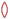
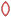
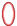
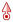
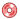
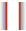
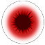
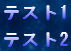
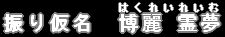

■弾画像(デフォルト)
「#include"script/default_system/Default_ShotConst.txt"」を記述することで
デフォルトの弾画像をロードします。
えむ氏サイトの素材弾画像を使用させていただいております。(license.txtを参照ください)
主に以下の種類があります。
(RED, ORANGE, YELLOW, GREEN, SKY, BLUE, PURPLE, WHITEがありますが、REDのみ記述。また一部省略。)
| 定数 | 説明 | 画像 |
| DS_BALL_SS_RED | 粒弾 | |
| DS_BALL_S_RED | 小弾 | |
| DS_BALL_BS_RED | 枠小弾 | |
| DS_BALL_M_RED | 中弾 | |
| DS_NEEDLE_RED | 針弾 |  |
| DS_RICE_S_RED | 米粒弾 |  |
| DS_ICE_RED | 氷塊弾 | |
| DS_MISSILE_RED | 座薬弾 | |
| DS_RICE_M_RED | 草履弾 |  |
| DS_KUNAI_RED | 苦無弾 |  |
| DS_SCALE_RED | 鱗弾 | |
| DS_BILL_RED | 札弾 |  |
| DS_COIN_RED | 銭弾 |  |
| DS_BUTTERFLY_RED | 蝶弾 | |
| DS_LIGHT_RED | 光弾 | |
| DS_STAR_S_RED | 小星弾 | |
| DS_STAR_M_RED | 大星弾 | |
| DS_KNIFE_YOUMU_RED | 小刀弾 | |
| DS_KNIFE_KOUMA_RED | ナイフ弾 | |
| DS_BEAM_RED | 光線 |  |
| DS_FIRE_RED | 炎弾 (RED, BLUEのみ) |
|
| DS_BALL_L_RED | 大弾 |  |
■弾画像の追加
デフォルトで定義されている弾画像だけでは、足りない場合も有ると思います。
そんなときは、LoadEnemyShotData/LoadPlayerShotData関数で弾画像の追加を行えます。
アニメーションする弾も定義することができます。
LoadEnemyShotData/LoadPlayerShotで読み込むためのファイルの書き方を以下に示します。
#UserShotData shot_image = "./img/Default_Shot.png" //画像ファイルへのパス delay_rect = (209, 472, 243, 507) //遅延時間用の描画元矩形 delay_color = (128,128,128) //ShotDataに弾の定義を書きます ShotData { id = 1 //ID rect = (0,0,32,32) //描画元矩形 render = ALPHA //描画方法 delay_color = (255,128,255) //遅延時間時の光の色 angular_velocity = rand(-5,5) //画像の回転速度 } //アニメーションする弾 ShotData { id = 3 render = ADD //加算合成 delay_color = (255,128,255) AnimationData { //16フレーム(0,0,12,12) //→8フレーム(12,0,24,12) //→24フレーム(12,12,24,24) //→最初に戻る animation_data = (16,0,0,12,12) animation_data = (8,12,0,24,12) animation_data = (24,12,12,24,24) } } //角度固定の弾 ShotData { id = 4 //ID rect = (32,32,64,64) //描画元矩形 render = ALPHA //描画方法 delay_color = (255,128,255) //遅延時間時の光の色 fixed_angle=true //角度固定 }
最初の「#UserShotData」で弾データを定義したファイルと認識されます。
続く「shot_image」に画像ファイルのパスを記述します。
パスは実行ファイルからの相対パスです。
ただし[./〜]のようにパスの最初に「./」をかくと、この定義ファイルのあるフォルダからのパスになります。
画像ファイル内の弾画像の向きには注意してください。
弾画像(デフォルト)にある画像と同じ向き(上向き)である必要があります。
「ShotData」には弾画像のIDや、描画元の矩形を記述します。
| 要素 | 説明 |
| id |
CraateShotXX等に渡すIDです。 IDの数値に制限はありませんが、ここで記述した最大の大きさのメモリ領域が確保されるため、 あまり大きな数値を指定しないほうが良いです。 (といっても10000以下程度なら問題はありません。) 同じIDがあった場合は後勝ちになります。 |
| rect |
描画もとの矩形を設定します(左、上、右、下)。 アニメーションがある場合は無視されます。 |
| render |
指定しなければALPHAになります。 ALPHA：通常描画 ADD_RGB(ADD)：加算合成描画 ADD_ARGB：α適応加算合成描画 MULTIPLY：乗算合成 SUBTRACT：減算合成 INV_DESTRGB：描画先の色を反転して合成 |
| delay_rect |
遅延時間中の描画もとの矩形を設定します(左、上、右、下)。 指定しない場合は、ShotDataの外で指定したdelay_rect設定が割り当てられます。 |
| delay_color |
遅延時間時の光の色です。 指定しない場合は、ShotDataの外で指定したdelay_color設定が割り当てられます。 |
| delay_render |
遅延時間時の光の合成種別を指定します。 指定可能な種別は、renderと同じです。 指定しなければ、ADD_ARGBになります。 |
| angular_velocity |
画像が回転する速度を指定します。 ランダムを指定したい場合はrandを用います。 指定しなければ0になります。 |
| fixed_angle |
弾の描画角度を移動方向に関係なく固定します。 (fixed_angle = true) 指定しなければ0falseになります。 |
| collision |
弾の当たり判定位置と半径を指定します。 省略した場合、弾の大きさから判断して適当な当たり判定が割り当てられます。 ・当たり判定を画像の中心から半径をrで指定。 collision = r ・当たり判定を画像の中心からx,yの位置に半径をrで指定。(複数指定可能) collision = (r, x, y) |
| AnimationData |
アニメーションする弾を定義します。 アニメーションはanimation_dataで定義していきます。 animation_data=(継続フレーム, 描画元左, 描画元上, 描画元右, 描画元下) になっています。 連続してanimation_dataを記述することで次々描画元矩形が変化するようにできます。 |
■ユーザ定義アイテム
組み込みのアイテムで足りない場合に、独自のアイテムを定義できます。
LoadItemData/ReloadItemData関数でユーザ定義アイテムの追加を行えます。
LoadItemData/ReloadItemDataで読み込むためのファイルの書き方を以下に示します。
#UserItemData item_image = "./Item.png" ItemData{ id = 1 //アイテムID rect = ( 0, 0, 16, 16 ) //描画元矩形 render = ALPHA //描画方法 } ItemData{ id = 2 //アイテムID type = 2 //アイテム種別(@Eventで通知される値) rect = (20, 1, 35, 16 ) //描画元矩形 render = ADD //加算合成 }
最初の「#UserItemData」でアイテムデータを定義したファイルと認識されます。
続く「item_image」に画像ファイルのパスを記述します。
パスは実行ファイルからの相対パスです。
ただし[./〜]のようにパスの最初に「./」をかくと、この定義ファイルのあるフォルダからのパスになります。
「ItemData」には弾画像のIDや、描画元の矩形を記述します。
| 要素 | 説明 |
| id |
ObjItem_SetItemID、CreateItemU1等に渡すIDです。 IDの数値に制限はありませんが、ここで記述した最大の大きさのメモリ領域が確保されるため、 あまり大きな数値を指定しないほうが良いです。 (といっても10000以下程度なら問題はありません。) 同じIDがあった場合は後勝ちになります。 |
| type |
アイテム種別(@Eventで通知される値)です。 指定しない場合はidと同じ値になります。 |
| rect |
描画もとの矩形を設定します(左、上、右、下)。 アニメーションがある場合は無視されます。 |
| out |
アイテムが画面外にあるときの描画もとの矩形を設定します(左、上、右、下)。 |
| render |
指定しなければALPHAになります。 ALPHA：通常描画 ADD_RGB(ADD)：加算合成描画 ADD_ARGB：α適応加算合成描画 |
| AnimationData |
アニメーションするアイテムを定義します。 アニメーションはanimation_dataで定義していきます。 animation_data=(継続フレーム, 描画元左, 描画元上, 描画元右, 描画元下) になっています。 連続してanimation_dataを記述することで次々描画元矩形が変化するようにできます。 |
■オブジェクト
「ObjXXX_」関数には以下の関係があり、上側の関数は下側のオブジェクトにも使用できます。
例えば、弾オブジェクトは「ObjShot」以外に「Obj_, ObjRender_, ObjMove_」系の関数を適応できます。
--描画系------------ Obj_ │ ObjRender_/ObjShader_ │ ├─────┬─────┬────┬────┐ ObjPrim_ ObjMesh_ ObjText_ ObjShot_ ObjItem_ │ │ │ ObjLaser_ │ │ │ ObjStLaser_ │ │ ├───────┬────────┬──────┐ ObjSprite2D_ ObjSpriteList2D_ ObjSprite3D_ ObjSpell_ │ ObjEnemy_ --移動系------------ ObjMove_ │ ├──────┬────┐ ObjEnemy_ ObjShot_ ObjItem_ │ ObjLaser_ │ ObjStLaser_
■描画優先度
描画の優先度は、0-100の101段階があります。
描画オブジェクトの優先度は「Obj_SetRenderPriorityI」で設定できます。
各オブジェクトのデフォルト描画優先度は以下です。
優先度が大きいほど上側に描画されます。
| 種類 | 優先度 | 説明 |
| STG枠内最小 | 20 |
STGシーン最小優先度です。 これより大きい優先度ではSTGシーン内に描画されます。 スコアや自機残機など、STGシーン外枠に描画する場合これより小さい優先度に設定する必要があります。 この優先度の数値はGetStgFrameRenderPriorityMinIで取得できます。 |
| 自機描画 | 30 (デフォルト) |
自機画像が描画される優先度です。 自機画像の優先度はObj_SetRenderPriorityIで変更可能です。 この優先度はGetPlayerRenderPriorityIで取得できます。 |
| 敵描画 | 40 (デフォルト) |
敵画像が描画される優先度です。 敵画像の優先度は個々にObj_SetRenderPriorityIで変更可能です。 |
| 弾描画 | 50(デフォルト) |
弾画像が描画される優先度です。 弾のデフォルト優先度はSetShotRenderPriorityIで変更可能です。 弾のデフォルト優先度はGetShotRenderPriorityIで取得できます。 弾画像の優先度は個々にObj_SetRenderPriorityIで変更可能です。 |
| アイテム描画 | 60(デフォルト) |
アイテム画像が描画される優先度です。 アイテムのデフォルト優先度はSetItemRenderPriorityIで変更可能です。 アイテムのデフォルト優先度はGetItemRenderPriorityIで取得できます。 |
| カメラフォーカス有効優先度 | 69 |
「STG枠内開始」〜「カメラフォーカス有効優先度」間の優先度は、 2Dカメラのフォーカス位置が適応されます。 これより大きい優先度では2Dカメラのフォーカス設定は無視されます。 (フォーカスによらず一定の位置に描画したいオブジェクトは70以上に設定します。) この優先度はGetCameraFocusPermitPriorityIで取得できます。 |
| STG枠内最大 | 80 |
STGシーン最大優先度です。 これより大きい優先度ではSTG枠外に描画可能です。 この優先度の数値はGetStgFrameRenderPriorityMaxIで取得できます。 |
■使用可能ファイル(画像, 音声)
以下のフォーマットのファイルが使用可能です。
| 種類 | 拡張子 | 説明 |
| 画像ファイル | png, bmp, jpg, tga , dds, dib |
PNGを使用してください。 色が抜けるのはα値=0の部分です。 |
| 音声ファイル | wav, ogg, mp3 |
ogg推奨です。 |
| 3Dポリゴン(固定) | mqo |
mqoはMetasequoiaというモデリングソフトで保存できるファイルです。 |
| 3Dポリゴン(アニメ) | elem |
elemはエルフレイナという3Dモデルアニメーションソフトで保存できるファイルです。 頂点シェーダを使用します。 頂点シェーダ非対応のビデオカードではCPU処理になるため重いです。 (オンボードPCは頂点シェーダ非対応だと思った方が良いです。) CPU処理でも動作可能にするために、できるだけローポリ(多くても頂点数1000程度のモデル)にするのが妥当だと思います。 ボーン数は80本以下限定です。 |
テクスチャは、ObjPrim_SetTexture等呼び出し時に、自動でロードされます。
事前に任意に読み込みたい場合のみ、LoadTextureを呼び出しておきます。
テクスチャの解放は、そのテクスチャを参照しているオブジェクトが全て削除されたときに自動で行われます。
ただし、LoadTextureで読み込んだ場合は、RemoveTextureで解放する必要があります。
(ただ、LoadTextureでロードした場合も、LoadTextureを呼び出したスクリプトが終了した場合は勝手に解放されます。)
またRemoveTextureを呼び出したときに、テクスチャを参照しているオブジェクトがまだある場合は、
すぐには解放されず、そのテクスチャを参照しているオブジェクトが全て削除されたときに自動で行われます。
(ScriptVersion2までと異なり、テクスチャの読み込みと解放にあまり気を使わなくても良くなっています。)
■テキスト表示
テキストを記述するときタグを挟むことで、改行やルビを振ることができます。
タグは、■スクリプトヘッダの#Textや■テキストオブジェクト操作での文字列表示に適応されます。
タグには以下のものがあります。
| 種類 | 説明 | サンプル |
| [r] | 改行 |
"テスト1[r]テスト2" ↓結果  |
| [ruby] |
ルビ(振り仮名) 振り仮名対象文字をrb、振り仮名をrtで指定します。 振り仮名は対象文字の幅に均等に割り振られます。 振り仮名の指定も文字列となるため「"」で囲む必要がありますが、 通常すでに文字列中のため、「\"」で囲む必要があります。 |
"振り仮名 [ruby rb=\"博麗 霊夢\" rt=\"はくれいれいむ\"] " ↓結果  |
特定の文字は以下の置換文字を使用して表示します。
| 置換文字 | 表示文字 |
| | (空白) |
| " | " |
| &osb; | [ |
| &csb; | ] |
■ピクセルシェーダ
ピクセル単位で描画結果をプログラミングする機能です。
例えば以下のようなことを行うことができます。
・ピクセル色の変更(白黒やセピア色で表示)
・マルチテクスチャ(2つ以上のテクスチャ合成やマスク機能)
・参照するテクスチャUV座標の操作(画像をゆがませるなど)
ただし、ビデオカードが対応していない場合は動作しません。
OSがWindowsXpの時代の、オンボードビデオはおそらく全滅です。
Vista以降に売り出されたPCであれば、おそらくほぼ問題ありません。
シェーダはHLSLというスクリプト言語で記述します。
言語の仕様は「HLSL のリファレンス」に記載されていますが、
ここでは1例として、敵の周囲を歪ませるシェーダを以下に示します。
| 項目 | 説明 |
| (1)テクスチャ |
ObjPrim_SetTextureで渡されているテクスチャです。 2つ以上のテクスチャを合成する場合は、ObjShader_SetTextureを使用します。 |
| (2)パラメータ |
スクリプト側から引き渡すパラメータが格納されている変数です。 例えば、float型に値を引き渡すには、ObjShader_SetFloatを使用します。 ex) ObjShader_SetFloat(obj, "enemyX_", 400); |
| (3)ピクセルシェーダ入力値 |
ピクセルシェーダに引き渡されてくる入力値です。 頂点シェーダを交えることで別のパラメータを受けることもできますが、 ピクセルシェーダのみ使用する場合は、以下の3つが渡されます。 ・頂点ディフューズ色(ObjRender_SetColorで設定されている色) ・ピクセルのテクスチャ座標(処理すピクセルのテクスチャ位置0.0-1.0) テクスチャの左端上端=0.0、右端下端=1.0になります。 例えば、幅512のテクスチャの真ん中(256)は0.5が渡されてきます。 ・描画先座標(このピクセルが書き込まれるスクリーンの座標) |
| (4)ピクセルシェーダ出力値 |
ピクセルの出力値です。 必ずなんらかの色をシェーダの結果として出力する必要があります。 |
| (5)ピクセルシェーダ |
ピクセルの入力値から出力値を作成する処理です。 |
| (6)テクニック |
テクニックで動作させるシェーダを指定します。 ここでは、ピクセルシェーダ3.0で、PsWaveという関数を使用するように指定しています。 |
//================================================================ //大域設定値 //(1)Texture sampler sampler0_ : register(s0); //-------------------------------- //(2)ゆがみ生成用パラメータ static const float RENDER_WIDTH = 1024; //レンダリングテクスチャの幅 static const float RENDER_HEIGHT = 1024; //レンダリングテクスチャの高さ float frame_; //フレーム数 float enemyX_; //敵の位置X float enemyY_; //敵の位置Y float waveRadius_; //エフェクトの半径 //================================================================ //-------------------------------- //(3)ピクセルシェーダ入力値 struct PS_INPUT { float4 diffuse : COLOR0; //ディフューズ色 float2 texCoord : TEXCOORD0; //テクスチャ座標 float2 vPos : VPOS; //描画先座標 }; //-------------------------------- //(4)ピクセルシェーダ出力値 struct PS_OUTPUT { float4 color : COLOR0; //出力色 }; //================================================================ // シェーダ //-------------------------------- //(5)ピクセルシェーダ PS_OUTPUT PsWave( PS_INPUT In ) : COLOR0 { PS_OUTPUT Out; //-------------------------------- //ゆらぎを計算 float dist2 = pow(In.vPos.x-enemyX_ ,2) + pow(In.vPos.y-enemyY_ ,2); float dist = sqrt(dist2); float sinTheta = (In.vPos.y - enemyY_) / dist; float cosTheta = (In.vPos.x - enemyX_) / dist; //歪み作成用のsinに使用する角度パラメータ float angle = In.vPos.y - enemyY_ + In.vPos.x - enemyX_ + frame_; angle = radians(angle); //該当ピクセルの歪みの半径を計算 //エフェクト半径の1/16を最大の歪み幅とする float waveRadius = waveRadius_ + waveRadius_/16 * (-1 + sin(angle)); //中心から距離が離れるほど影響を小さくする float powerRatio = (waveRadius - dist) / waveRadius; if(powerRatio < 0){powerRatio = 0;} //色情報を取得する位置のバイアス値 float biasRadius = waveRadius * powerRatio; float biasX = biasRadius * cosTheta; float biasY = biasRadius * sinTheta; //テクスチャの色情報を取得する位置 float2 texUV; texUV.x = -biasX / RENDER_WIDTH + In.texCoord.x; texUV.y = -biasY / RENDER_HEIGHT + In.texCoord.y; //-------------------------------- //テクスチャの色 float4 colorTexture = tex2D(sampler0_, texUV); //頂点ディフーズ色 float4 colorDiffuse = In.diffuse; //合成 float4 color = colorTexture * colorDiffuse; //色を赤っぽく変化させる if(powerRatio > 0) { color.g = color.g * (1 - powerRatio); color.b = color.b * (1 - powerRatio); } Out.color = color; return Out; } //================================================================ //-------------------------------- //(6)technique technique TecWave { pass P0 { PixelShader = compile ps_3_0 PsWave(); } }
シェーダは以下の方法のいずれかで適用できます。
| 項目 | 説明 |
| 1オブジェクトごと |
各Sprite2D/Sprite3Dなどのオブジェクトに個別にシェーダを設定する方法です。 各オブジェクトのObjShader_SetShaderF/Oを呼び出すことで指定できます。 //オブジェクトにシェーダを設定 let objWave = ObjPrim_Create(OBJ_SPRITE_2D); //2Dスプライトオブジェクト生成 //〜〜〜 let pathShader = GetCurrentScriptDirectory ~ "SamplePS03_HLSL.txt"; ObjShader_SetShaderF(objWave, pathShader); ObjShader_SetTechnique(objWave, "TecWave"); |
| 描画優先度(複数オブジェクト) | 指定した優先度に対して、一度にシェーダを設定します。 ObjShader_Create()で生成したシェーダオブジェクトを、SetShaderIに渡します。 //シェーダ生成 let objShader = ObjShader_Create(); ObjShader_SetShaderF(objShader, pathShader); ObjShader_SetTechnique(objShader, "TecMonotone"); //特定の描画優先度にシェーダを適応 SetShaderI(objShader, 0, 100); |
■アーカイブファイル
付属のFileArchiver.exeで、画像・音声・スクリプトファイルなどを1ファイルにまとめることができます。
[メリット]
以下のようなメリットがあります。
・スクリプトを改変されづらくなる
・音声・画像の生ファイルを見られづらくなる
[対象ファイル]
弾幕風で使用可能なファイルはどのファイルもアーカイブ可能です。
またアーカイブするにあたり、スクリプト側を特には書き換える必要はありません。
[弾幕風の再生対象にするには]
アーカイブしたファイルを、弾幕風の再生対象にするには、
通常のスクリプトと同じく script/ フォルダに置くことで再生対象にできます。
[ファイル検索範囲]
画像、音声、スクリプトなどを読み込むときファイルは以下の順序で検索し使用します。
1) アーカイブされていないファイルがあれば優先して使用する
2) アーカイブファイル内を探してあれば採用
上記2)の検索対象となるアーカイブファイルは、メインとなるスクリプトがアーカイブされている場合、
そのアーカイブファイルは自動で検索対象になります。
検索対象のアーカイブファイルの追加は AddArchiveFile関数で行います。
[注意]
アーカイブしたファイルを展開するソフトはありません。
アーカイブ前のファイルは削除しないようお願いします。
■定義ファイル(th_dnh.def)
th_dnh.defに設定を記述することで、th_dnh.exeに特定の動作を設定できます。
| 項目 | キー | 値 |
| パッケージ スクリプトパス |
package.script.main |
パッケージスクリプトのパスを指定することで、 th_dnh.exeでそのスクリプトのみを再生することができます。 パスは実行ファイル(th_dnh.exe)からのパスを指定します。 ex) package.script.main = script/ExRumia/ExRumia_Package_Main.txt |
| ウィンドウタイトル | window.title |
ウィンドウのタイトルを変更します。 ex) window.title = test |
| 描画領域 |
screen.width screen.height |
弾幕風の描画領域は通常 640 * 480 ですが、 640 * 480 以上のサイズを描画領域にしたい場合に指定します。 通常のスクリプトは640*480を前提としているため、 専用のパッケージスクリプト再生時にしか指定しない方が良いです。 指定できる範囲は(640,480) - (1920,1200)の間です。 参考までに、ゲームで使用されそうな解像度とアスペクト比を以下に示します。 ・640 * 480 (4:3) ・800 * 600 (4:3) ・1024 * 768 (4:3) ・1280 * 960 (4:3) ・1024 * 576 (16:9) ・1280 * 720 (16:9) ・1600 * 900 (16:9) ・1920 * 1080 (16:9) 高解像度を指定した場合でも、高解像度に対応していないディスプレイの時は、 表示できる大きさになるように強制的に縮小表示します。 (くっきり表示されなくなると思います。) スクリプト側からは、以下の関数で設定されている描画領域を取得可能です。 ・横幅：GetScreenWidth ・縦幅：GetScreenHeight ex) screen.width=1024 screen.height=576 |
以下に定義ファイルの記述例を示します。
//-------------------------------------------------------------- //パッケージスクリプトパス //指定したパッケージスクリプト再生専用になります。 package.script.main = script/ExRumia/ExRumia_Package_Main.txt //-------------------------------------------------------------- //ウィンドウタイトル //指定したウィンドウタイトルになります。 window.title = test //-------------------------------------------------------------- //スクリーンの基本サイズ //弾幕風の描画領域は通常 640 * 480 ですが、 //640 * 480 以上のサイズを描画領域にしたい場合に指定します。 //・通常のスクリプトは640*480を前提としているため、 // 専用のパッケージスクリプト再生時にしか指定しない方が良いです。 //・高解像度を指定した場合でも、高解像度に対応していないディスプレイの時は、 // 表示できる大きさになるように強制的に縮小表示します。 // (くっきり表示されなくなると思います。) screen.width=1024 screen.height=576